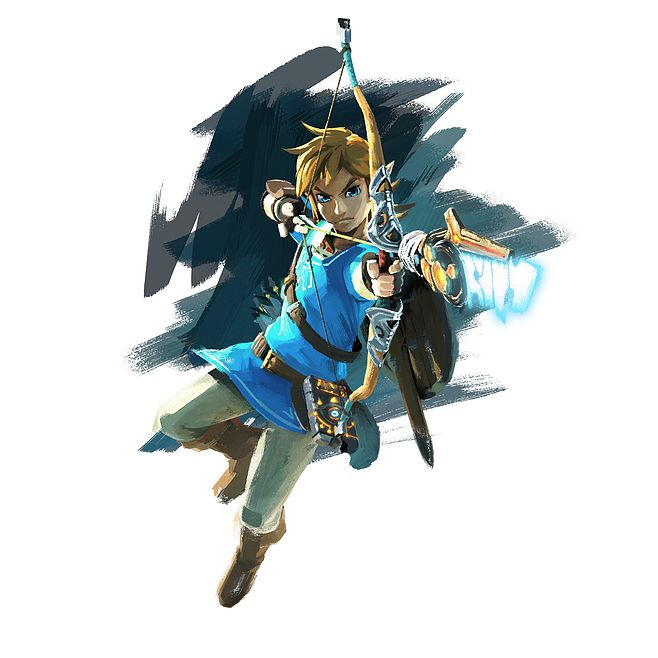
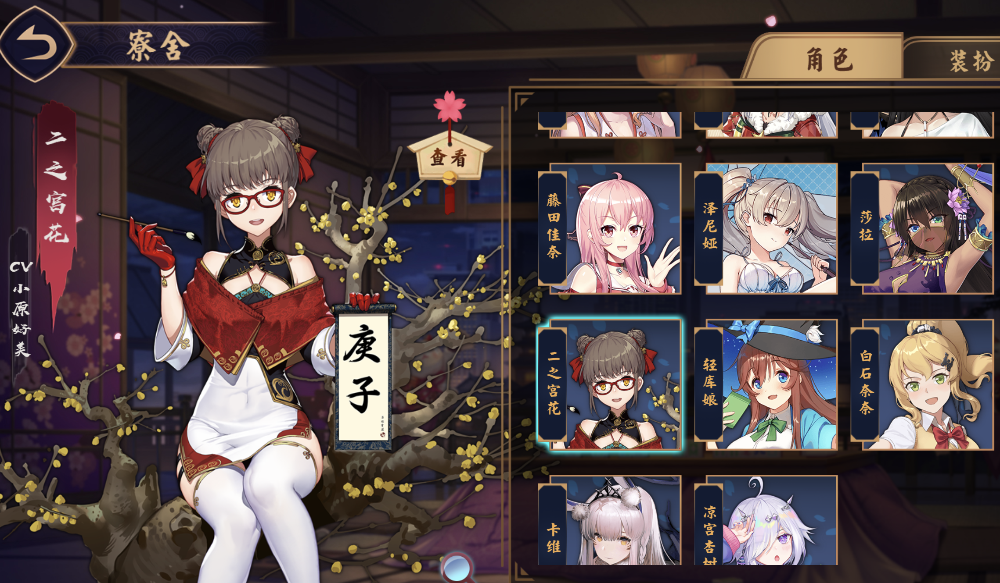

零碎
前端是真的傻逼，折腾博客有感
起源
已经毕业一个多月，因为疫情在家一直没出门。自从 19 年 2 月开始找实习，就一直忙碌于实习、秋招、毕设。一直觉得应该写点什么。毕设答辩通过后，咸鱼了一段时间。现在把博客重新翻出来，反正没事干就把之前的各种报错都修复了，顺便添加了主题缺失的标签页。15、16年还活跃的前端项目，里面 sass, gulp, jade 啥的，现在已经是时代眼泪了。想起来之前写的一个 vue 的项目，过了两年，npm install 一堆 warning，build 直接就失败，真坑。
科研
硕士期间做内核验证，写了很多不常见的函数式代码和交互式定理证明。形式化验证是个冷门方向，数学基础是数理逻辑，不过真正做的时候也不会去做太理论的东西，因为太难。毕设和航天院所合作，做的是验证航天飞行器上操作系统的内存管理模块，所幸发现了一些设计或者实现上的错误，比较轻松通过了答辩。有次群聊给学长解答了一系列关于形式化验证的问题，有机会可以整理成 QA 帖。形式化验证冷门是有原因的，这玩意在一些关键的领域确实有价值，但是验证太过困难，基础设施贫乏，学习成本高，感觉自己的智商决定了不适合做这个。
实习
19 年 2 月面试了字节跳动基础架构组，前两面都很顺利，问的都会，第三面远程面试心态爆炸，各种翻车，没有多刷 LeetCode 和面经吃亏了，找工作确实是非常应试，有些问题太过套路化。在备胎池里躺了两周就凉了，然后开始加大力度准备面试。本来没打算投微软，丹老师说她投了我就顺便投了一发，结果一路笔试面试都挺顺利，6月开始在微软做 summer intern，实习了 3 个月。微软的氛围非常好，实习期间得到了同事很多帮助，特别是 mentor 和 mgr。实习做的事情关于 Azure 的一个内部系统，尝试做了一些系统优化，设计了个新的算法，benchmark 效果很不错。和 mentor 的讨论中学到了很多比如数据库、分布式方面的经验，实习期间读了 DDIA，也确实对工作起到了一些帮助。微软之外，还面试过美团、快手的实习岗。美团面的基础架构组，面试质量比较好（除了面试官太过纠结于 CAP），不过觉得望京太远最后没有去。快手是在收到微软 offer 之后，算法题印象比较深。
书
19 年初到现在看了几本书，基本都是技术书，没办法要恰饭的。
深入理解Linux内核
看这本书了解了 Linux 内核源码，内核源码不可避免非常复杂，而且不同子系统之间相互依赖，读起来比较困难，看完之后感觉很多东西变得容易理解。
Redis设计与实现
分析 Redis 源码的书，Redis 源码不算复杂，这本书讲解的很好，还是国人作者。
Go程序设计语言
做 6.824 时的突发奇想，一周翻完了，go 的协程支持简直爽。
深度探索C++对象模型
虽然内容比较古老，但是能理解 C++ 很多基础的问题，比如虚表，方法调用，多继承
Linux多线程服务端编程 : 使用muduo C++网络库
讲了怎么用现代 C++ 写服务器，很值得参考，有些问题要实践过才印象深刻，之前用 c++ 写的网络库，写了个开头就一直鸽。。。
深入理解C#
微软实习的时候读的，C# 的设计很优秀
Designing Data-Intensive Applications : The Big Ideas Behind Reliable, Scalable, and Maintainable Systems
神书
操作系统导论
快速翻了一遍，本科的时候应该早点看这个入门
Vim实用技巧
答辩完了没事干就在看这本，看书名和目录以为很零碎，其实并不会。Vim 确实有很多花样操作，看这本书学了很多，可惜需要不断的训练才能变强。
OnJava8
成功入坑 java
深入理解 java 虚拟机
也没有特别深入，不过总算是入门 java 了。
中国国家治理的制度逻辑
没有看完，讲解了很多制度、政府行为背后的逻辑
C++ Concurrency in Action: 2nd Edition
读了第五章，讲原子操作和内存模型，举的一些例子都很有助于理解
多处理器编程的艺术
读了前 3 章，了解了一些理论，比如可线性化的形式化定义
游戏
九张羊皮纸
熟悉操作和法术之后简单了很多，组队玩的几次都很有乐趣，一个人玩就肝各种成就解锁。
空洞骑士
寒假在家玩了很久，从螳螂导师打到梦魇格林，故事里的虫子世界塑造的很好，当时买来花了 30 多，太良心了。
塞尔达传说旷野之息
18 年玩的比较多，后来开了大师档，19 年 2 月开始就玩的少了，寒假继续玩一年前的大师档，发现进度其实还可以，打算继续玩下去，拔出大师剑，完成剑之试炼。

雀魂
偶尔还是会打麻将，不过老忍不住氪金抽雀士，留下了懊悔的眼泪。

Author: shengrang
Link: https://blog.runc.dev/2020/02/20/piecemeal-0/
License: 知识共享署名-非商业性使用 4.0 国际许可协议